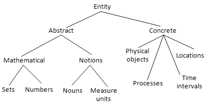
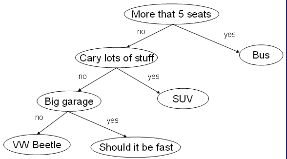
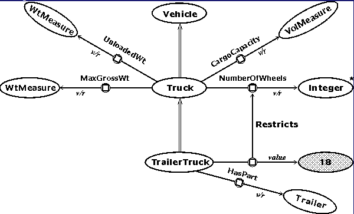
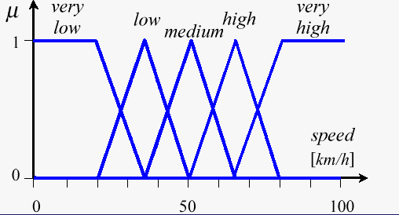
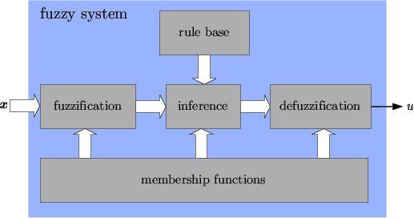
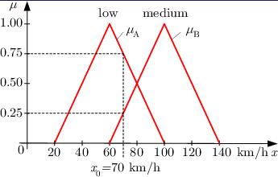

AI Topic
AI Topics
Knowledge Representation
- A knowledge representation (KR) is a surrogate, a substitute for
the thing itself, used to enable an entity to determine consequences
by thinking rather than acting, i.e., by reasoning about the world
rather than taking action in it.
- It has three components: (i) the representation's fundamental
conception of intelligent reasoning; (ii) the set of inferences the
representation sanctions; and (iii) the set of inferences it
recommends.
- It is a medium for pragmatically efficient computation, providing
guidance for organizing information to facilitate making inferences.
- It is a medium of human expression, i.e., a language in which we
say things about the world.
KR As Surrogate
- A stand-in for things that exist in the world.
- It is a component of the reasoning system.
- The representation stands for something in the real world
- there must be a connection between them
- this defines the semantics or meaning of the representation.
- How close is a representation to the represented object? Which
properties of the object should be present in the representation and
which can be omitted?
- Representations are imperfect: they contain simplifying
assumptions and maybe artifacts.
Ontological Engineering
- Ontology - branch of philosophy studying entities that
exist, their classification, and the relations between them.
- Types of entities: physical objects, abstract objects, time,
locations, actions, events, beliefs.
- Decisions made on imperfect representations can be wrong. We must
choose the representation with this in mind.
- Selecting a particular representation means making an ontological
commitment.
Ontology Example

KB and Database
- The KB in a program can be represented as a relational database.
- The larger the KB, the better its structure must be thought from
the start.
- The database should be consistent in terms of connectivity - if
something changes in one place, the change must be reflected
everywhere else.
- The database must be unified, meaning that we must be able to use
its various components within the same framework. A particular
application may require more than 1 component.
Expert Systems
- Programs that incorporate knowledge of a particular domain and
that can help with making decisions.
- They often emerge from the retirement of a human expert that takes
time and effort to replace.
- Basic components: a knowledge base KB and an inference system.
- The expertise is organized in rules of type "if-then" by a human
expert.
- For classification/diagnosis problems this often results in a
tree.
General Functionality
- The user seeks a diagnosis or goal (car failure).
- The system asks a question, often with a yes/no answer.
- If this answer is not sufficient to determine the diagnosis
completely, another question will be asked.
- Some of the systems can allow for an undetermined answer (I don't
know) and they can adapt to that,
- The answer might be given with a certain probability.
- In general they avoid asking for irrelevant input.
Example - Car Classification

Semantic Networks
- A graph notation for representing knowledge. The nodes are
concepts and the edges are relations between them.
- Definitional networks - the relations are subtype or is-a.
- Assertional networks are designed to assert propositions.
- Implicational networks use implication to connect nodes.
- Executable networks can include procedures.
- Learning networks build or extend their representations by
acquiring knowledge from examples.
- Hybrid networks combine two or more of the previous
techniques.
Example - Definition Network

Categories and Objects
- Organizing the objects in categories.
- Some reasoning takes places at the level of categories.
- "I want to eat an apple."
- Apple(x), or Member(x, Apple) and Subset(Apple, Food).
- The categories form a hierarchy where each class inherits the
properties of the parent, or simply a network (apples are both food
and fruit).
- The categories of a class compose a taxonomy.
Partitioning
- Two or more categories are disjoint if they are mutually exclusive
(male/female).
- A decomposition of a class into categories is called exhaustive if
each object of the class must belong to at least one category
- living = {animal, vegetable, fungi, bacteria}
- A partition is a an exhaustive decomposition of a class into
disjoint subsets.
- student = {undergraduate, graduate}
- Related problem: clustering. Given a set of objects, find an
appropriate category for each of them. The categories may not be
predefined.
Attributes
- Composition: PartOf(nose, face).
- Some categories can be defined as rules:
- Biped(x) => b1, b2 (Leg(b1)
& Leg(b2) & PartOf(b1, x) & PartOf(b2, x) & !equal(b1,
b2).
- Prime(n) <=> (Number(n) & n != 1 & d (equal(n%d, 0) => (equal(d, 1) |
(equal(d, n))))
- Measurements: Length(x), Price(x), etc. These are functions, not
predicates.
- Things: 3 apples. Stuff: water, more water, some quantity of
water.
Situations
- Situation: a predicate that is true at a particular moment in
time. They may also have a specific location. A particular state of
the system.
- Drives(Mary, car, I90, 03/15/096)
- Fluent: predicates and functions that can change from a
moment to another. Happy(x).
- Atemporal or eternal predicates: Warrior(A) will be true for as
long as the object A exists. Alive(A) may change from a moment to the
next.
Actions
- Predicates that represent changes in the environment. The involve
at least a subject, often one or more objects.
- eat(x, y), sleep(x), talk(x), say(x, y)
- When an action is part of a situation, it can result in other
predicates becoming true at a later moment in time.
- (Eat(x, y, t) & Apple(y)) => !Hungry(x, t+1)
- Projection: the agent can use some rules to predict the outcome of
its possible actions and choose the appropriate one. This is done by
planning.
Situation Calculus
- Description of an action:
- Possibility rule (precondition): a sentence that specifies when an
action is possible.
- has(x, y, s) & apple(y) => Possible(eat(x, y), s)
- Effect rule (postcondition): a sentence that describes the
consequences of an action.
- eat(x, y, s) => !exist(y, s+1)
- collect(x, y, s) => has(x, y, s+1)
- Frame problem: the collection of things / predicates that don't
change.
Time and Events
- In time-based calculus the fluents are valid for particular
moments in time instead of in a particular situation.
- A fluent is true at a particular point in time if it was initiated
or caused by an event in the past, and was not terminated by another
event in the meantime.
- Initiates(e, f, t), e-event, f-fluent, t-time.
- Terminates(e, f, t). Happens(e, t). Clipped(f, t, t2)
- T(f, t2) <=> e, t
(Happens(e, t) & Initiates(e, f, t) & (t < t2) &
!Clipped(f, t, t2) )
- Clipped(f, t, t2) <=> e,
t1 (Happens(e, t1) & Terminates(e, f, t1) & (t < t1) &
(t1 < t2) )
Mental Processes
- Does an agent know that he knows something?
- We need to represent the fact that an agent believes something to
be true or knows something to be true.
- We can make inferences about things an agent believes, things that
the agent knows, and things that are true, but the combinations are
not always possible.
- The inferences can be made only if the agent is a logical agent
capable of reasoning.
- This is called modal logic.
Beliefs
- Believes(x, P(a)) x believes that P(a) is true.
- Inferences are not obvious.
- Believes(x, P(a)) & (a = b) does not imply that Believes(x,
P(b)) is also true.
- We can apply reasoning within the system of beliefs for a logical
agent:
- Believes(x, P(a)) & Believes(x, P(y) => Q(y)) can imply
that Believes(x, Q(a)).
- We can't apply MP if the agent doesn't know or believe that P(y)
=> Q(y).
Knowledge and Belief
- Knows(x, P(a)) is similar to Believes, but the fact P(a) must be
true.
- KnowsWhether(x, P(a)) means Knows(x, P(a)) | Knows(x, !P(a)).
- KnowsWhat(x, EyeColor(a)) means that y Color(y) & Knows(x, (EyeColor(a) = y)).
- Believes(x, P(a)) & Knows(x, P(y)=>Q(y)) implies
Believes(x, Q(a)).
- Knows(x, P(a)) & Believes (x, P(y)=>Q(y)) implies
Believes(x, Q(a)).
- Knows(x, P(a)) & Knows(x, P(y)=>Q(y)) implies Knows(x,
Q(a)).
Fuzzy Logic
- First author: Lotfi Zadeh, University of California at Berkley,
1965.
- Def. Part of logic dealing with approximate reasoning,
derived from the fuzzy set theory.
- A fuzzy set is one to which elements belong with a given
percentage.
- In fuzzy logic the truth values belong to the interval [0, 1]
representing a percentage of truth.
- It is better suited to represent imprecise information/attributes
from the real world and to make appropriate inferences.
Fuzzy Logic Expressions
- Classic logic: "Bill is a tall person."
- Tall(Bill) or Attribute(Bill, Tall) or
- in terms of sets, Bill belongs to TallPeopleSet
- Fuzzy logic: "Bill is 80% tall."
- Tall(Bill) = 0.8 or
- Bill belongs to TallPeopleSet by 80%
- We can also describe Bill as "quite tall" (80%) or "very
tall"(95%) or "almost tall" (60%).
- It can apply to any comparable attributes:
- "Bill is taller than John."
- Tall(Bill) > Tall(John)
Hedges
- Hedges were introduced by Zadeh (MIT/IBM) and Lakoff (Berkley)
in fuzzy logic and represent modifier to fuzzy sets:
- All-purpose: very, quite, extremely
- Truth values: quite true, mostly false
- Probabilities: likely, not very likely
- Quantifiers, most, several, few
- Possibilities, like almost impossible, quite possible.
Examples of Deductions
- This stream is narrow.
- This stream and that stream are approximately equal.
- Thus, that stream is more or less narrow.
- Most men are vain.
- Socrates is a man.
- Thus, Socrates is most likely vain.
FL Versus Probabilities
- Classic logic: "The pony is pretty."
- Either True or False.
- Fuzzy logic: "The pony is 90% pretty."
- This means that about 90% of the people looking at the pony will
think it's pretty. We're talking about one particular pony.
- Probabilities: "The pony has 90% chances to be pretty."
- This means that for the given population of ponies in our model,
90% of them are pretty. So 9 out of 10 ponies picked at random are
expected to be pretty.
Operators
- Zadeh operators:
- or - value(A | B ) = max{value(A), value(B)}
- and - value(A & B) = min{value(A), value(B)}
- not - value(!A) = 1-value(A)
- Example: Annie is 90% tired and 75% cranky. Then Annie is
- 90% tired or cranky,
- 75% tired and cranky,
- 10% rested, and
- 25% is in a good mood.
- Other more complex metrics are also available.
Applications
- Automobile subsystems, such as ABS and cruise control
- Microcontrollers, microprocessors, robotics.
- Air conditioners, cameras, dishwashers, elevators.
- Search engines (web)
- The MASSIVE engine used in the Lord of the Rings films to create
huge scale armies with random but somewhat orderly movements
- Digital image processing, edge detection.
- AI agents for games
- Language filters on message boards for filtering out offensive
text.
Fuzzy Controller
- A controller using fuzzy values for variables and rules like
- IF variable IS value THEN action
- The rules are not mutually exclusive.
- Example: controller for an air conditioner:
- IF temperature IS very cold THEN stop fan
- IF temperature IS cold THEN turn down fan
- IF temperature IS normal THEN maintain level
- IF temperature IS hot THEN speed up fan
Example of Fuzzy Sets - car speed

Fuzzy Controller Structure

Example of Fuzzification - car speed

Defuzification Example
- Rule1: If the car is slow then increase the speed by 10.
- Since we got a 0.75% slow -> +10*0.75
- Rule2: If the car is fast, then decrease the speed by 10.
- Fuzzy value for fast = 0.25 => -10*0.25.
- Crisp answer:
(10*0.75 � 10*0.25)/(0.75+0.25) = +5